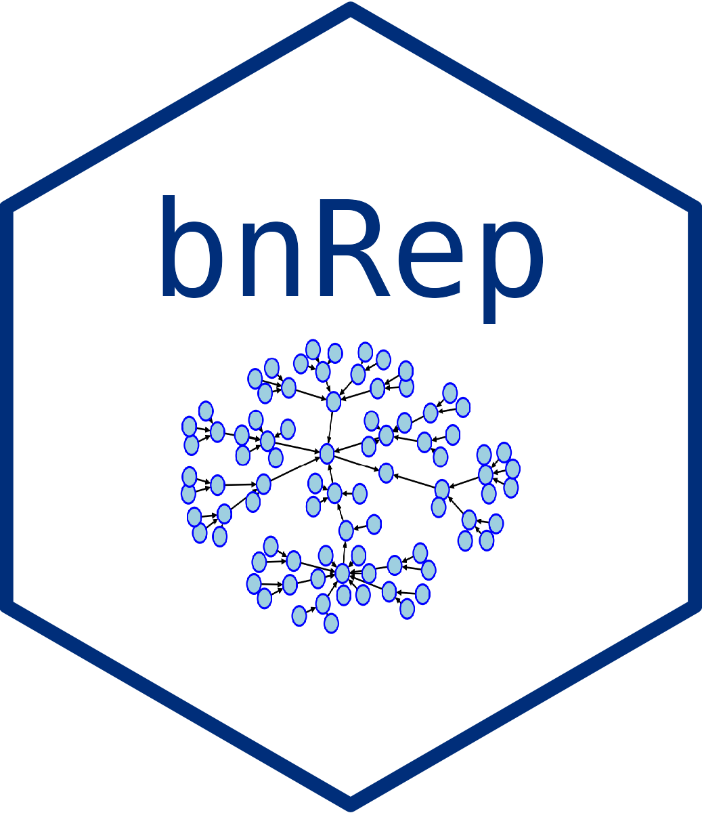
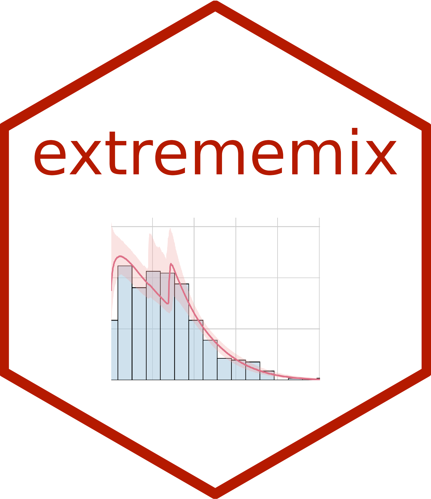

Software
To explore all my software and the code associated with my papers, visit my GitHub page.
stagedtrees
Overview
The `stagedtrees` package implements staged event trees, a class of probability models for categorical random variables. It allows for the estimation and analysis of staged event trees from data, offering functions to compute probabilities and make predictions.
Installation
# Install stable version from CRAN:
install.packages("stagedtrees")
# Or the development version from GitHub:
remotes::install_github("stagedtrees/stagedtrees")
Links
bnmonitor

Overview
The `bnmonitor` package allows for sensitivity and robustness analysis in Bayesian networks. It provides tools to perform various checks and monitors on Bayesian network models.
Installation
# Install stable version from CRAN:
install.packages("bnmonitor")
# Or the development version from GitHub:
remotes::install_github("manueleleonelli/bnmonitor")
Links
bnRep

Overview
The `bnRep` package provides tools for reproducibility of Bayesian network structure learning. It enables users to generate reproducible results in their structural learning pipelines.
Installation
# Install stable version from CRAN:
install.packages("bnRep")
# Or the development version from GitHub:
remotes::install_github("manueleleonelli/bnRep")
Links
extrememix

Overview
The `extrememix` package implements Bayesian estimation of extreme value mixture models, estimating the threshold over which a Generalized Pareto distribution can be assumed as well as high quantiles and other measures of interest in extreme value theory.
Installation
# Development version from GitHub:
remotes::install_github("manueleleonelli/extrememix")
Links

manuele.leonelli@ie.edu
Assistant Professor of Statistics
School of Science and Technology
IE University, Madrid, Spain